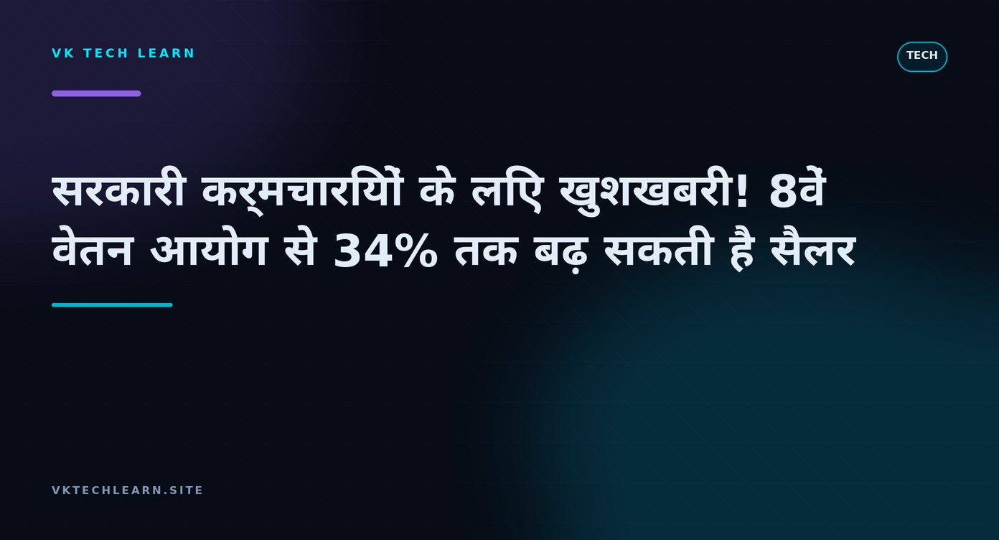

सरकारी कर्मचारियों के लिए खुशखबरी! 8वें वेतन आयोग से 34% तक बढ़ सकती है सैलर
सरकारी कर्मचारियों के लिए खुशखबरी! 8वें वेतन आयोग से 34% तक बढ़ सकती है सैलरी
लाखों केंद्रीय कर्मचारियों और पेंशनर्स के लिए एक बड़ी राहत की खबर है। सरकार जल्द ही 8वें वेतन आयोग (8th Pay Commission) के गठन की तैयारी कर रही है, जिससे वेतन और पेंशन में भारी बढ़ोतरी की संभावना जताई जा रही है।

क्या होता है वेतन आयोग?
- प्रत्येक 10 वर्षों में केंद्र सरकार वेतन आयोग का गठन करती है।
- इसका कार्य सरकारी कर्मचारियों की सैलरी, भत्तों और लाभों की समीक्षा करना होता है।
- यह आयोग Terms of Reference (ToR) के अनुसार सुझाव देता है।
कितनी बढ़ेगी सैलरी?
- Ambit Capital की रिपोर्ट के अनुसार, कर्मचारियों की सैलरी में 30% से 34% तक इजाफा हो सकता है।
- यह बढ़ोतरी उपभोक्ता खर्च और आर्थिक गतिविधियों को बढ़ावा देगी।
- 7वें वेतन आयोग में केवल 14% की वृद्धि हुई थी, जो 1970 के बाद सबसे कम थी।
Fitment Factor का रोल
- Fitment Factor वह गुणांक है जिससे वर्तमान बेसिक पे को बढ़ाया जाता है।
- 8वें वेतन आयोग में यह फैक्टर 1.83 से 2.46 के बीच हो सकता है।
- 7वें वेतन आयोग में यह फैक्टर 2.57 था, जिससे न्यूनतम वेतन ₹7,000 से बढ़कर ₹18,000 हुआ।
पेंशनर्स के लिए क्या बदलेगा?
- पेंशनभोगियों को बेसिक पे और DA में बढ़ोतरी मिलेगी।
- हालांकि वे HRA जैसे अन्य भत्तों के पात्र नहीं होंगे।
- नई Unified Pension Scheme (UPS) अप्रैल 2025 से लागू हो चुकी है।
- UPS के तहत रिटायरमेंट पर अंतिम वेतन का 50% सुनिश्चित किया जाएगा।
कब तक लागू हो सकता है 8वां वेतन आयोग?
- पहले उम्मीद थी कि यह 1 जनवरी 2026 से लागू होगा।
- हालांकि ToR और समिति गठन की प्रक्रिया में देरी हो रही है।
- संभावना है कि इसे वित्त वर्ष 2026-27 के दौरान लागू किया जाएगा।
- 7वें वेतन आयोग को लागू होने में 18-24 महीने लगे थे।
सरकारी कर्मचारी और पेंशनर्स अब इस आयोग के गठन और सिफारिशों का इंतजार कर रहे हैं। यदि रिपोर्ट सही साबित होती है, तो यह वेतन वृद्धि सभी के लिए बड़ी राहत लेकर आ सकती है।
#8वांवेतनआयोग #8thPayCommission #सरकारीनौकरी #सैलरीहाइक #FitmentFactor #PensionNews #UnifiedPensionScheme #GovtSalaryUpdate #PayCommission2025